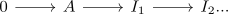
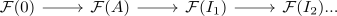

zeroth left derived functor
Proposition
Let $\mathcal{A}, \mathcal{B}$ be abelian categories and $\mathcal{F}: \mathcal{A} \rightarrow \mathcal{B}$ a right exact functor. Then for the left derived functor it holds that
\begin{align*}
\mathcal{LF}_0 \cong \mathcal{F}
\end{align*}
up to natural isomorphism
Proof
object
note that by construction

is exact and as $\mathcal{F}$ is right exact, so is

here $\mathcal{F}(0) \cong 0$ (see: right exact functor preserves zero morphisms, functor preserving zero morphism and preserving zero object)
Thus by Homology of a chopped short exact sequence it follows that
\begin{align*}
\mathcal{F}(A) \cong \mathcal{LF}_0(A)
\end{align*}